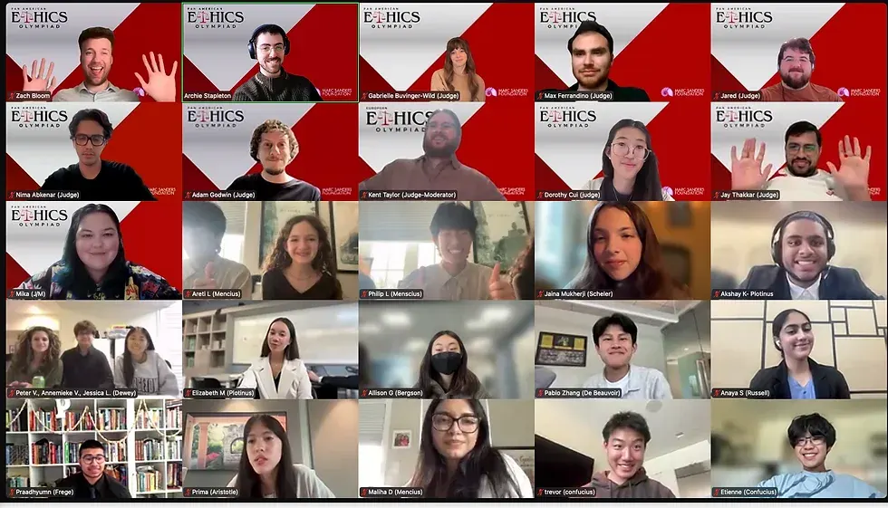

High school · School teams
Senior Ethics Olympiad
School-based regionals for high school teams across Europe and the Americas. Same case set across regions. Winners qualify for the International Final, hosted online from Australia.
- Ages
- 14–18
- Team size
- 3 to 5
- Regions
- European, Pan American
- Final
- Australia, 2027